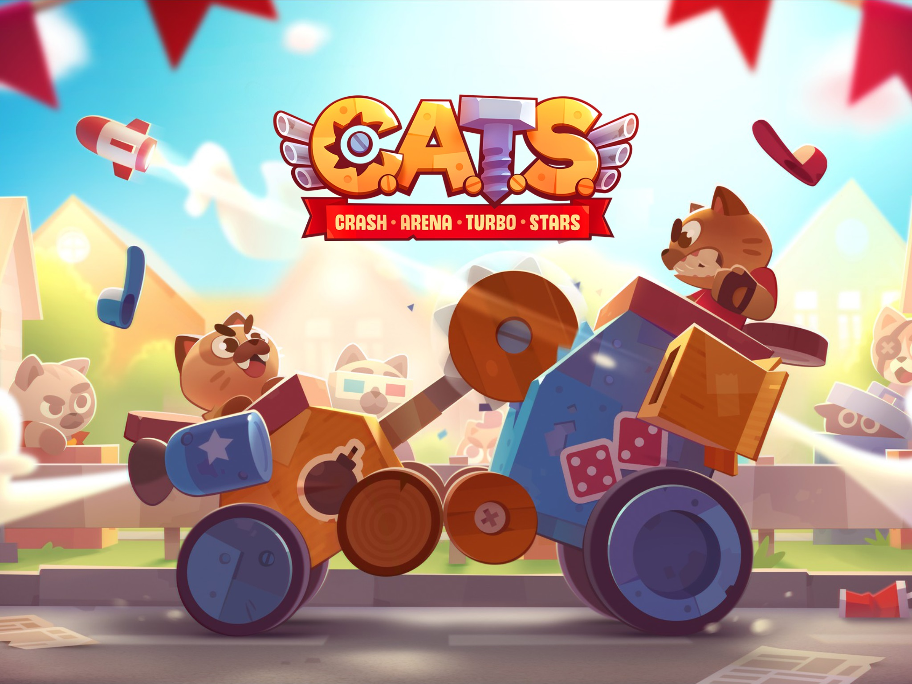

OGame est un jeu vidéo en temps réel multi-joueurs de réflexion et de stratégie spatiale. Il s’agit d’un jeu en ligne codé en PHP, JavaScript et CSS.
Il se présente sur les fondements de l’astronomie, à savoir un univers composé de galaxies avec diverses planètes situées à des emplacements spécifiques.
Sur ces planètes, se trouvent divers bâtiments, avec des armes de défense, ainsi que des vaisseaux d’attaques, et de transports. Il existe également différentes technologies qui améliorent les capacités générales.
Il existe trois sortes de ressources : métal, cristal, deutérium, que l’on obtient de différentes manières : soit via la production minière, soit à travers le commerce (marchandage), soit par le biais du pillage (attaques), et enfin, en récupérant les ruines des vaisseaux ennemis détruits. Ces ressources sont utilisées soit pour la construction (bâtiments, vaisseaux, défenses), pour la recherche technologique, ou en tant que carburant.
En début du jeu, on commence avec une planète mère placée aléatoirement dans l’univers, que l’on va développer afin de partir à la conquête d’autres colonies dans ce même univers. Il est possible de jouer en alliance, ce qui permet des attaques ou des défenses en groupe.
J’ai joué à OGAME de 2004 à 2014.
Durant ces dix années, mon compte principal se situait sur l’univers 1 (alliance Atlas), mais il m’arrivait de jouer
régulièrement sur d’autres univers.
Ma stratégie était principalement basée sur la construction minière, et le marchandage.
J'étais classé dans le top 5 de mon univers, et dans le top 3 au monde pour la production minière.
LOL signifie League of Legends, il est sorti pour le grand public en 2009. C’est une arène de bataille en ligne multi-joueurs. On évolue dans un univers heroic-fantasy.
Le Nexus est le cœur de la base de chaque équipe. Détruisez le Nexus ennemi en premier pour remporter la
partie. Pour
cela il vous faudra détruire toutes les défenses (tourelles et inhibiteurs) d'au moins une voie.
La jungle se trouve entre les voies et elle est remplie de monstres neutres et de plantes diverses. Les deux
types de
monstres les plus importants sont le baron Nashor (le plus puissant du jeu) et les dragons. Les éliminer offre à votre
équipe des bonus uniques.
Il existe cinq postes de base (top, jungle, mid, bot carry, bot support). Chaque postes correspond plus
particulièrement à certains types de champions et de rôles.
Les champions se renforcent en :

En début en partie chaque joueur choisir et incarne un champion différent, aux capacités uniques. Dans le mode
classique, deux équipes de cinq joueurs s'affrontent.
Il est possible de jouer en solo ou en coopération avec des amis.
C.A.T.S signifie Crash Arena Turbo Stars. Il s’agit d’un jeu sur IOS et Android gratuit, de combat et de gestion multi-joueur. Celui-ci se joue par le biais de tournois en ligne et de guerre de bandes.
Il existe deux types de véhicules :
En début du jeu, on ne détient qu’un simple véhicule en bois, quelques armes, des éléments (arme utilitaire avec 0 point d’attaque) et des roues.
Pour cela, il faut Construire sa machine en l’équipant d’éléments et d’armes dévastatrices pour affronter d’autres
joueurs en duel. L’équilibre entre la défense et l’attaque du véhicule est indispensable.
J’ai commencé à jouer à partir de fin août 2019 pour arrêter vers mai 2020 (début de la formation DWWM).
J’étais dans une bande qui s’appelait GIIC (Gang II chatons).